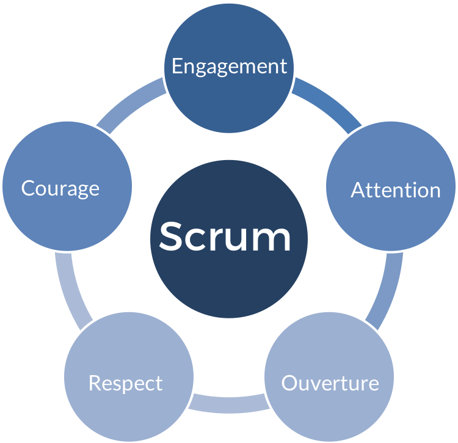

Le 12 Novembre, j'ai entamé la formation de préparation au diplôme de "Titre Professionnel de Développeur web et web mobile" reconnu Bac+2 à Elan Formation à Strasbourg
Cette formation me permet aujourd'hui de mettre en pratique mes connaissances, d'adopter une bonne pratique des langages Front-end et Back-end et a ainsi de me préparer à entrée sur le marché professionnel en tant que Développeur web.
Au cours de cette formation nous allons être formé à utiliser le HTML5, CSS3, Javascript, PHP Orienté objet ainsi que le Framework Symfony4
Fin Septembre 2019, j'ai effectué un stage de 2 semaines à AW Innovate à Strasbourg.
AW Innovate est une agence difitale conseil en innovation. Elle accompagne les entreprises qui le souhaitent vers la création de leur site web.
Durant 2 semaines, au sein d'une équipe de développeurs, j'ai eu l'occasion démarrer un projet concret et de réaliser la partie front et back d'un site web.
Cette expérience a été pour moi essentielle. Elle m'a permis de mettre en pratique ce que j'ai appris durant les derniers mois, de me rendre compte du chemin parcourus et du chemin qu'il me restait à parcourir.
Création d'un site web à AW Innovate
À AW Innovate, j'ai développé la partie front-end (HMTL5, CSS3 et Bootstrap4) d'un projet web, puis intégré à un thème WordPress et enfin j'ai appris à administré une interface client avec ACF Pro en PHP.
Courant Avril 2019, j’ai eu la chance d’être pris en stage au sein du pôle développement de l’entreprise Tradelab à Paris.
Tradelab est une start-up spécialiste des campagnes display, mobile et vidéo programmatiques.
Durant ces 2 semaines, j’ai rencontré des développeurs Front (très orienté JavaScript, TypeScript et Angular), Back (PHP), QA (testeurs), Infra (maintenance serveurs).
Cet expérience en milieu professionnel a confirmé mon projet de réorientation dans le milieu du développement informatique.
Après quelques mois à apprendre seul, il me semblait important de pouvoir expérimenter ce métier avant de me projeter dans une formation.
Application météo en JavaScript
J'ai ainsi pu m'exercer à JavaScript en développant
une application météo en temps réel (via l'API OpenWeather) et découvrir l'utilisation des API ainsi que des fichiers JSON
La méthode Agile et SCRUM

J'ai aussi eu l'occasion de découvrir la méthode de management Agile en particulier la méthode SCRUM ainsi que ses rituels quotidiens et hebdomadaires qui permettent une réelle cohésion, la considération du travail de chacun et garantissent une bonne communication.
Mes projets
Site de Photographies
Le site de Photographies réalisé par mes soins en Octobre 2019.
Front-end en HTML5, CSS3 avec le Framework Bootstrap4
Création d'un thème WordPress et intégration du Front-end
Administration d'une interface client avec ACF Pro permettant de modifier et d'ajouter titres, catégories et contenues (textes et photos)
N’hésitez pas à remplir ce formulaire si vous souhaiter me laisser un message que ce soit pour me proposer un stage ou me faire des retours sur la construction de mon site !